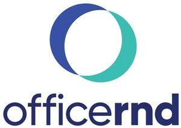

Trade Mark Journal No.2025/036 5 September 2025
WO0000001871222 (9,35,41,42)
Office of origin: European Union Intellectual Property Office (EUIPO)
Date of International Registration:26 June 2025
Date of designation in the UK:
26 June 2025

The mark contains the colours Cyan (HEX #1AC9BA); Blue (HEX #053FD1), Blue (HEX #032373).
Circular figurative element in cyan (#1AC9BA) and blue (#053FD1); All letters in dark blue (#032373).
International priority date claimed: 22 January 2025
(European Union Intellectual Property Office (EUIPO))
(019134193)
- Class 9
- Downloadable software; downloadable computer software; downloadable application software; downloadable software applications; computer programs [downloadable software]; computer software applications, downloadable; downloadable computer software applications; programs (computer -) [downloadable software]; computer software downloadable from the internet; recorded computer software; software (computer -), recorded; computer software, recorded; computer software platforms, recorded or downloadable; recorded computer programmes; recorded computer programs; computer programs, recorded; computer programmes, recorded; software for the analysis of business data.
- Class 35
- Business consulting; professional business consulting; business consulting services; business management consulting services in the field of information technology; business management and consulting services; information and data compiling and analyzing relating to business management; business data analysis; business data analysis services; analysis of business data; compilation of business data; data processing for businesses; preparation of business statistical data; business consultancy services relating to data processing; market analysis; market analysis reports; market analysis services; analysis of markets; market research and market analysis; market research and analysis; market analysis and research; market research data analysis; analysis of marketing trends; market analysis and research services; market research and analysis services; analysis of market research data; analysis of market research statistics; preparation of market analysis reports.
- Class 41
- Providing electronic publications; providing online electronic publications; seminars; conducting seminars; arranging of seminars; organization of seminars; conducting training seminars; organisation of training seminars; arranging and conducting seminars; conducting courses, seminars and workshops; conducting training seminars for clients; conducting of seminars and congresses; organisation of seminars and conferences; arranging and conducting of seminars; seminars (arranging and conducting of -); arranging of workshops and seminars; arranging and conducting conferences and seminars; training.
- Class 42
- Software development, programming and implementation; software as a service; software as a service [SAAS] services; software as a service [SaaS]; consulting services in the field of software as a service [SaaS]; platform as a service [PaaS].
Officernd Limited
Representative: SVETLIN DIMITROV, Iztok Dstr., 28I, Samokov Str., BG-1113 Sofia, BULGARIA